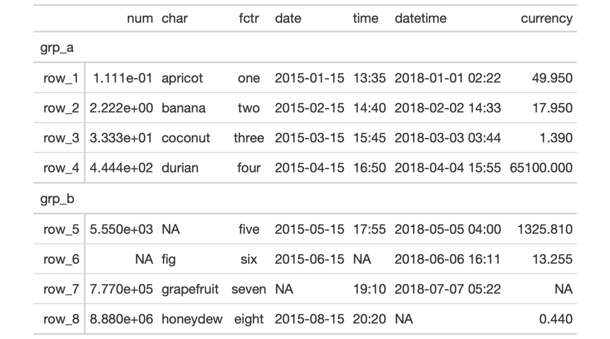
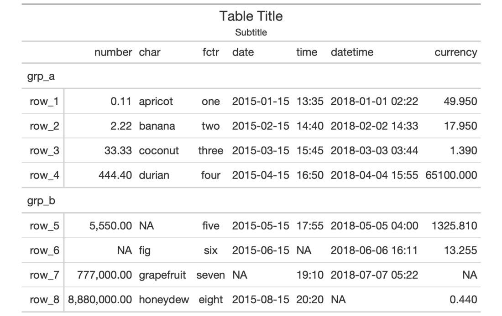

| gt {gt} | R Documentation |
The gt() function creates a gt table object when provided with table
data. Using this function is the first step in a typical gt workflow.
Once we have the gt table object, we can perform styling transformations
before rendering to a display table of various formats.
gt(
data,
rowname_col = "rowname",
groupname_col = dplyr::group_vars(data),
caption = NULL,
rownames_to_stub = FALSE,
auto_align = TRUE,
id = NULL,
row_group.sep = getOption("gt.row_group.sep", " - ")
)
data |
A |
rowname_col |
The column name in the input |
groupname_col |
The column name in the input |
caption |
An optional table caption to use for cross-referencing in R Markdown documents and bookdown book projects. |
rownames_to_stub |
An option to take rownames from the input |
auto_align |
Optionally have column data be aligned depending on the
content contained in each column of the input |
id |
The table ID. By default, with |
row_group.sep |
The separator to use between consecutive group names (a
possibility when providing |
There are a few data ingest options we can consider at this stage. We can
choose to create a table stub with rowname captions using the rowname_col
argument. Further to this, stub row groups can be created with the
groupname_col. Both arguments take the name of a column in the input table
data. Typically, the data in the groupname_col will consist of categories
of data in a table and the data in the rowname_col are unique labels
(perhaps unique across the entire table or unique within groups).
Row groups can also be created by passing a grouped_df to gt() by using
the dplyr::group_by() function on the table data. In this way, two or more
columns of categorical data can be used to make row groups. The
row_group.sep argument allows for control in how the row group label will
appear in the display table.
An object of class gt_tbl.


1-1
Other Create Table:
gt_preview()
# Create a table object using the
# `exibble` dataset; use the `row`
# and `group` columns to add a stub
# and row groups
tab_1 <-
exibble %>%
gt(
rowname_col = "row",
groupname_col = "group"
)
# The resulting object can be used
# in transformations (with `tab_*()`,
# `fmt_*()`, `cols_*()` functions)
tab_2 <-
tab_1 %>%
tab_header(
title = "Table Title",
subtitle = "Subtitle"
) %>%
fmt_number(
columns = num,
decimals = 2
) %>%
cols_label(num = "number")